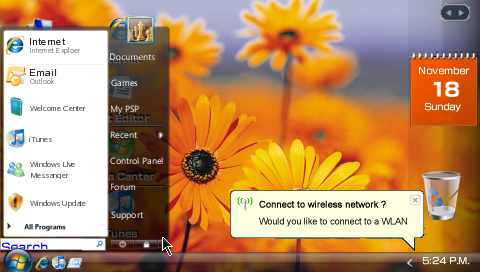
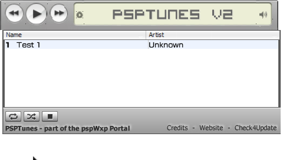

Music, apps and games
PspWxp has currently a 28 applications and 68 games. The applications are usually a html web page (not are a .exe aplication, you don´t install any application of Windows in PspWxp).
For open an app or game
It´s simply, open the start menu by clicking on it, then open a category and finally click on the application/game/link.
In the screenshot, how to open an aplication (Live Messenger).
|  | Start menu |
 |
Applications menu |
This menus can change in future versions.
PSPtunes

PSPTunes is a mp3 player for the PSP. It allows you to browse the web while listening to music! It works using Adobe Flash.
You need firmware 2.7 or higher with Adobe Flash activated (for enable it: [Settings] > [System Settings] > [Enable Flash® Player].
If you have a psp 2000 series psp you do not need to enable flash player.
How to use PSPTunes:
* Hover your cursor over a song and press X to play it.
* The next and previous buttons allow you to change the track.
* The pause button pauses the song, and play resumes it.
* The volume slider at the right allows the volume to be controlled.
* The song tracker underneath the song name displays the progress of the current song. Clicking on the tracker will bring it to that part of the song.
Related tasks
| User additions | |
| System security |